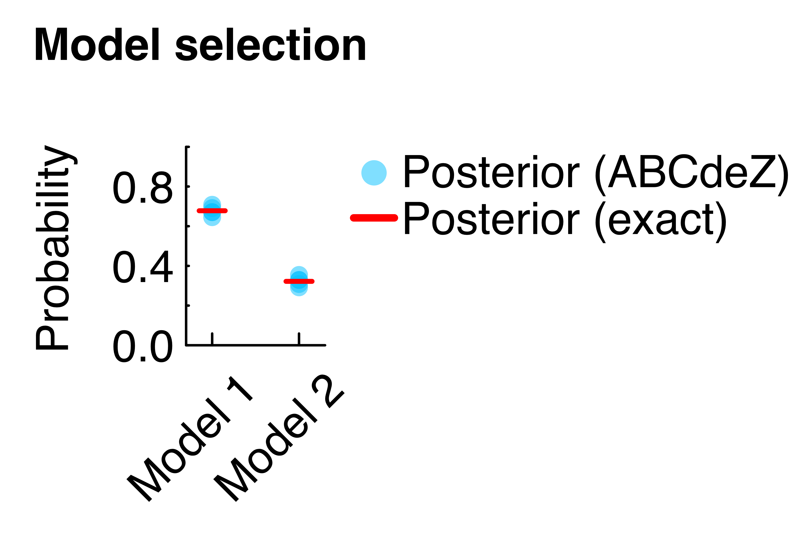

ABCdeZ.jl
Approximate Bayesian Computation (ABC) with differential evolution (de) moves and model evidence (Z) estimates.
ABCdeZ.jl offers Bayesian parameter estimation and model comparison/selection for inference problems with an intractable likelihood. Models only need to be simulated (instead of calculating the likelihood). In this documentation you will find everything to get started.
ABCdeZ.jl was developed @TSB by Maurice Langhinrichs and Nils Becker. This work is based on many people's previous achievements, particular some part of the code base was adapted from KissABC.jl; please find a a complete list of references below.
Introduction
- two example files for both alg. ? or one extended minimal example (also changing script in examples...)
- describe briefly: demc greedy version (biased before completion but fast), desmc (accurate, a bit slower, but also evidence estimate (up to (final) kernel norm))
- link to all the caveats of ABC-based evidence values
Here's some inline maths: $\sqrt[n]{1 + x + x^2 + \ldots}$.
To write a system of equations, use the aligned environment:
\[\begin{aligned} \nabla\cdot\mathbf{E} &= 4 \pi \rho \\ \nabla\cdot\mathbf{B} &= 0 \\ \nabla\times\mathbf{E} &= - \frac{1}{c} \frac{\partial\mathbf{B}}{\partial t} \\ \nabla\times\mathbf{B} &= - \frac{1}{c} \left(4 \pi \mathbf{J} + \frac{\partial\mathbf{E}}{\partial t} \right) \end{aligned}\]
These are Maxwell's equations.
Minimal example
Here we will use ABCdeZ.jl to infer the model evidences and posterior distributions within a simple toy example. The models have a single parameter $θ$ that is, a priori, normally distributed (prior). After seeing one single data point, we obtain an updated posterior knowledge. To obtain model evidences, next to the posterior samples, we will use the abcdesmc! method; for posterior samples only one may also use abcdemc! with a very similar syntax as seen in an code example.
ABCdeZ.jl (as ABC in general) requires model simulations (for samples of $θ$) only, and not the likelihood values (at these $θ$). However, in this simple example the likelihood is available and chosen in a way (also Normal) that the prior is conjugate, and the exact posterior distributions and evidences are known analytically. We will compare the inferences made by ABCdeZ.jl with the analytical counterparts.
We load the required packages, set the single data point and the target $ϵ$ for the ABC runs.
using ABCdeZ
using Distributions
### data
data = 3
### ABC target ϵ (maximum distance)
ϵ = 0.3Then we set up the inference of a first model. The normal prior is specified via Distributions (for more see "Prior" box below). Note that the model is solely specified by a random simulation for a given $θ$. The distance function here simply reports the absolute distance between the random model output and the single data point (see here for additional features in the distance function).
### model 1 inference
σ₁² = 10
prior1 = Normal(0, sqrt(σ₁²))
# model simulation (to replace likelihood)
model1(θ) = rand(Normal(θ, 1))
# distance function between model and data
dist1!(θ, ve) = abs(model1(θ)-data), nothingWith the following line we run the abcdesmc! method of ABCdeZ.jl. The inference result is stored in r1.
### ABC run
# run the smc method for model 1
r1 = abcdesmc!(prior1, dist1!, ϵ, nothing,
nparticles=1000, parallel=true)From the result r1 we can read out the posterior samples (important: weighted by Wns, see box "Posterior sample weights" here) and the estimated model evidence for model 1 (transforming back from log-scale).
### process results
# posterior parameters
posterior1 = [t[1] for t in r1.P[r1.Wns .> 0.0]]
# model evidence (logZ is the logarithmic evidence)
evidence1 = exp(r1.logZ)Plotting the posterior1 samples as a histogram, one can see the gained knowledge from the prior just by the single data point (Figure below, left panel). The samples also match the analytical posterior, available in this simple example.
To demonstrate model comparison enabled by ABCdeZ.jl, we now repeat the procedure with a second model. Here, for simplicity, model 2 only differs from model 1 in the prior; of course in more interesting settings, not only the prior, but the whole architecture of models may be different (kind of and/or number of parameters). Any models can be compared in principle; as long as inferences are done for the same (summary) data (and simulations always match the structure of the data), distance method (here abs()) and target $ϵ$. The same target $ϵ$ is important in ABCdeZ.jl due to the (typically) unnormalised ABC kernel (see box "Model evidence (off by a factor)" here; if not possible, advanced info here).
### model 2 inference
σ₂² = 100
prior2 = Normal(0, sqrt(σ₂²))
model2(θ) = model1(θ)
dist2!(θ, ve) = abs(model2(θ)-data), nothing
r2 = abcdesmc!(prior2, dist2!, ϵ, nothing,
nparticles=1000, parallel=true)
posterior2 = [t[1] for t in r2.P[r2.Wns .> 0.0]]
evidence2 = exp(r2.logZ)The posterior inference of model 2 is visually very similar to model 1, except the difference in the prior (Figure above, right panel).
Finally, the estimated evidences can be used to compute posterior model probabilities. The model prior is uniform between the two models here.
### model probabilities
# model priors (uniform here)
mprior1 = 0.5
mprior2 = 0.5
# model posterior probabilities
mposterior1 = evidence1*mprior1 / (evidence1*mprior1 + evidence2*mprior2) # posterior prob. model 1
mposterior2 = evidence2*mprior2 / (evidence1*mprior1 + evidence2*mprior2) # posterior prob. model 2The model probabilities can be visually compared (Figure below), recovering the exact analytical results. Note that evidence values by ABCdeZ.jl are numerically uncertain (see box "Uncertainty of model evidence" here); as such the figure below also shows evidence values from repeated runs.
The complete code for this minimal example, including the derivation of the analytical counterparts, can be found on GitHub.
Multidimensional prior distributions (continuous, discrete or mixed) can be specified via the Factored() syntax (from independent 1d marginals), e.g. prior2d = Factored(Normal(0, sqrt(10)), DiscreteUniform(1, 10)).
Inference by abcdesmc!
ABCdeZ.abcdesmc! — Functionabcdesmc!(prior, dist!, ϵ_target, varexternal; <keyword arguments>)Run ABC with diffential evolution (de) moves in a sequential Monte Carlo setup (smc) providing posterior samples and a model evidence estimate.
The particles have to be weighted (via r.Wns) for valid posterior samples.
Arguments
prior:DistributionorFactoredobject specifying the parameter prior.dist!: distance function computing the distance (≥ 0.0) between model and data, for given(θ, ve)input (θparameters,veexternal variables, seevarexternal).ϵ_target: final target distance (or more general, target width of the ABC kernel); algorithm stops ifϵ_targetornsims_maxis reached.varexternal: external variables that are passed as second positional argument todist!and can be used to support the distance computation with fast in-place operations in a thread-safe manner; objects invarexternalcan be in-place mutated, even inparallelmode, as each thread will receive its own copy ofvarexternal(if not needed inputnothing).nparticles::Int=100: number of total particles to use for inference.α=0.95: used for adaptive choice of ϵ specifying the sequential target distributions; technically, ϵ will be theα-quantile of current particle distances.δess=0.5: if the fractional effective sample size drops belowδess, a stratified resampling step is performed.nsims_max::Int=10^7: maximal number ofdist!evaluations (not counting initial samples from prior); algorithm stops ifϵ_targetornsims_maxis reached.Kmcmc::Int=3: number of MCMC (Markov chain Monte Carlo) steps at each sequential target distribution specified by current ϵ and ABC kernel type.ABCk=ABCdeZ.Indicator0toϵ: ABC kernel to be specified by ϵ widths that receives distance values.facc_min=0.25: if the fraction of accepted MCMC proposals drops belowfacc_min, diffential evolution proposals are reduced by a factor offacc_tune.facc_tune=0.95: factor to reduce the jump distance of the diffential evolution proposals in the MCMC step (used iffacc_minis reached).verbose::Bool=true: if set totrue, enables verbosity (printout to REPL).verboseout::Bool=true: if set totrue, algorithm returns a more detailed inference output.rng=Random.GLOBAL_RNG: an AbstractRNG object which is used by the inference.parallel::Bool=false: if set totrue, threaded parallelism is enabled;dist!must be thread-safe in such a case, e.g. by making use ofvarexternal(ve).
Examples
julia> using ABCdeZ, Distributions;
julia> data = 5;
julia> prior = Normal(0, sqrt(10));
julia> model(θ) = rand(Normal(θ, 1));
julia> dist!(θ, ve) = abs(model(θ)-data), nothing;
julia> ϵ = 0.3;
julia> r = abcdesmc!(prior, dist!, ϵ, nothing, nparticles=1000, parallel=true);
julia> posterior = [t[1] for t in r.P[r.Wns .> 0.0]];
julia> evidence = exp(r.logZ);Posterior samples obtained by abcdesmc! have to be associated with their weights (r.Wns). With an indicator ABC kernel (default) there are just two weights (i.e. alive and dead particles) and the correct posterior samples are hence given by posterior = [t[1] for t in r.P[r.Wns .> 0.0]] (for the first parameter here).
The model evidence estimates from the abcdesmc! method obtained by the default ABC indicator kernel are off by a normalisation factor coming from an unnormalised kernel (the one used in the final iteration). To do model selection / comparison this means that evidence estimates for the set of models have to be done for the same data (or summary statistics), distance function, ABC kernel and the same target ϵ (which is ϵ_target if run not stopped by nsims_max). Then the (unknown) normalisation factor is the same for all models and does not matter (cancels) for Bayes factors or posterior model probabilities. See here for workarounds if ϵ is not the same.
As of now the abcdesmc! method does not provide a (numerical) uncertainty for the model evidence estimate from a single run. It may be however very useful to check for this when doing model comparison (as the resulting Bayes factors or posterior model probabilities are uncertain as well). So, if the runtime permits, run the abcdesmc! method multiple times and collect the resulting set of evidence values for mean/median and std estimates.
Inference by abcdemc!
ABCdeZ.abcdemc! — Functionabcdemc!(prior, dist!, ϵ_target, varexternal; <keyword arguments>)Run ABC with diffential evolution (de) moves in a Markov chain Monte Carlo setup (mc) providing posterior samples.
Algorithm needs to converge for an unbiased posterior estimate.
Arguments
prior:DistributionorFactoredobject specifying the parameter prior.dist!: distance function computing the distance (≥ 0.0) between model and data, for given(θ, ve)input (θparameters,veexternal variables, seevarexternal).ϵ_target: final target distance (or more general, target width of the ABC kernel); algorithm equilibrates to final target distribution (approximate posterior) ifϵ_targetis reached.varexternal: external variables that are passed as second positional argument todist!and can be used to support the distance computation with fast in-place operations in a thread-safe manner; objects invarexternalcan be in-place mutated, even inparallelmode, as each thread will receive its own copy ofvarexternal(if not needed inputnothing).nparticles::Int=50: number of total particles to use for inference in each generation.generations::Int=20: number of generations (total iterations) to run the algorithm.verbose::Bool=true: if set totrue, enables verbosity (printout to REPL).rng=Random.GLOBAL_RNG: an AbstractRNG object which is used by the inference.parallel::Bool=false: if set totrue, threaded parallelism is enabled;dist!must be thread-safe in such a case, e.g. by making use ofvarexternal(ve).
Examples
julia> using ABCdeZ, Distributions;
julia> data = 5;
julia> prior = Normal(0, sqrt(10));
julia> model(θ) = rand(Normal(θ, 1));
julia> dist!(θ, ve) = abs(model(θ)-data), nothing;
julia> ϵ = 0.3;
julia> r = abcdemc!(prior, dist!, ϵ, nothing, nparticles=1000, generations=300, parallel=true);
julia> posterior = [t[1] for t in r.P];The abcdemc! method implements a "greedy"/biased Metropolis-Hasting step in the Markov chain. This allows a fast convergence, particularly well-suited for unimodal problems. However, to obtain valid posterior estimates the algorithm needs to converge (all particles below ϵ_target and r.reached_ϵ==true). Otherwise the samples will be biased (closer to the MAP (maximum a posteriori probability) parameter values with reduced variation).
In contrast to the abcdesmc! method the resulting posterior samples of the abcdemc! method are not associated with weights and can be used directly, i.e. posterior = [t[1] for t in r.P] (for the first parameter here).
Distributions and Priors
ABCdeZ.Factored — TypeFactored{N} <: Distribution{Multivariate, MixedSupport}A Distribution type that can be used to combine multiple UnivariateDistribution's (independently).
Examples
julia> prior = Factored(Normal(0, 1), Uniform(-1, 1))
Factored{2}(
p: (Normal{Float64}(μ=0.0, σ=1.0), Uniform{Float64}(a=-1.0, b=1.0))
)Distributions.pdf — Functionpdf(d::Factored, x)Function to evaluate the pdf of a Factored distribution object.
Distributions.logpdf — Functionlogpdf(d::Factored, x)Function to evaluate the logpdf of a Factored distribution object.
Base.rand — Functionrand(rng::AbstractRNG, factoreddist::Factored)Function to sample one element from a Factored object.
Base.length — Functionlength(p::Factored)Returns the number of distributions contained in p.
Various notes
ABC - Approximations
eps, summary stats
ABC (kernel instead of likelihood) and summary stats both introduce approximation errors, maybe read the two lines in Didelot again...
eps trade off
More on model evidences
when using summary stats => sufficient for model selection (link stackoverflow post and paper)
summary stats need to be sufficient for model selection (it is not enough if summary stats are sufficient for each model's parameters!), link to paper and stackoverflow topic
\@ref(normalisation_factor) off by normalisation factor (with default kernel), does not matter when comparing models for the same eps; what if same eps not available / impractical?
same ϵ target necessary (if not possible upper bound conservative estimate may be possible, or, use ϵs and logZs lists for finding last common ϵ to compare with)
explain here what to do when same eps difficult (link goes here...)
Features for the distance methods
In the distance function in the minimal example (
dist!(θ, ve) = abs(model(θ)-data), nothing)veare "external variables" (varexternalinabcdesmc!) that can be used in the distance computation and mutated in-place, even in the parallel mode (each thread will obtain its own copy for thread-safe parallel ABC runs).veis passed as 4th positional argument toabcdesmc!(nothingin the minimal example).In the distance function in the minimal example (
dist!(θ, ve) = abs(model(θ)-data), nothing) the second return argument (nothing) can be used to store arbitrary data (blobs) to each particle; theseblobswill be associated with the final posterior samples/particles in the end. For exampleblobscould record the actual simulation output:function dist2!(θ, ve, constants, data) # constants can be used to pass thread-safe constants that are NOT mutated; # ve for in-place, mutatable variables # distance method simdata = model(θ) blob = simdata d = abs(simdata-data) d, blob end dist2!(θ, ve) = dist2!(θ, ve, nothing, data) r = abcdesmc!(prior, dist2!, ϵ, nothing, nparticles=1000, parallel=true) posterior = [t[1] for t in r.P[r.Wns .> 0.0]] evidence = exp(r.logZ) blobs = r.blobs[r.Wns .> 0.0]
References
- Some part of the code was copied, adapted and/or inspired by KissABC.jl [1]. For example, the
Factoredsyntax was adopted,abcdemc!is based onABCDE,abcdesmc!is loosely based onsmc. We thank the developers of the package. - A very good theory background for the general approach of model evidences from single ABC runs is given by Didelot et al. (2011) [2]. More details on algorithms (in the likelihood-context) is found in Llorente et al. (2020) [3].
- The differential evolution moves are introduced in Ter Braak (2006) [4].
- As done also in KissABC.jl [1], the implementations of the
abcdemc!method are a simplified version of the method in Turner et al. (2012) [5]. The algorithmic idea inabcdesmc!is mostly based on Amaya et al. (2021) [6], next to KissABC.jl, particular the handling of weights and the adaptive differential evolution move tuning (Amaya et al. (2021) is in the likelihood context, which we adapted to ABC). - Closer read on sufficient summary statistics for model comparison in ABC is found in Marin et al. (2014) [7] and condensed in this stackexchange post [8].
- Stratified resampling (for
abcdesmc!) is inspired by Douc et al. (2005) [9].
Index
ABCdeZ.FactoredABCdeZ.abcdemc!ABCdeZ.abcdesmc!Base.lengthBase.randDistributions.logpdfDistributions.pdf
- 1KissABC (https://github.com/francescoalemanno/KissABC.jl)
- 2Didelot et al. "Likelihood-free estimation of model evidence." Bayesian Anal. 6 (1) 49 - 76, 2011.
- 3Llorente et al. "Marginal likelihood computation for model selection and hypothesis testing: an extensive review" arXiv:2005.08334 [stat.CO], 2020.
- 4Ter Braak. "A Markov Chain Monte Carlo version of the genetic algorithm Differential Evolution: easy Bayesian computing for real parameter spaces" Statistics and Computing volume 16, pages 239–249, 2006.
- 5Turner et al. "Approximate Bayesian computation with differential evolution" Journal of Mathematical Psychology, 2012.
- 6Amaya et al. "Adaptive sequential Monte Carlo for posterior inference and model selection among complex geological priors" arXiv:2105.02012 [physics.geo-ph], 2021.
- 7Marin et al. "Relevant statistics for Bayesian model choice" J. R. Statist. Soc. B, 2014.
- 8https://stats.stackexchange.com/questions/26980/abc-model-selection
- 9Douc et al. "Comparison of Resampling Schemes for Particle Filtering" arXiv:cs/0507025 [cs.CE], 2005.